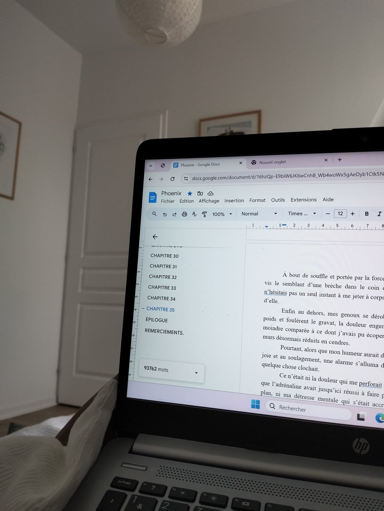

There are rules nobody tells you, and every student deserves to know them.
The personal statement essay is one of the most important aspects of your college application. This is how colleges see who you truly are, and it should express something about yourself that your activities list doesn't already say. When I first started writing my personal statement, I thought the prompt meant exactly what it said. After reading many essays from my friends and sample essays from other resources, I realized that the essay has a whole set of hidden rules that nobody writes down. The best essays weren't just good because of the writing or topic. It was because the students who wrote them were aware of the rules and had someone to tell them.

In James Warren's "The Rhetoric of College Application Essays: Removing Obstacles for Low Income and Minority Students," he makes the argument that the prompts have an implicit message and that students that come from wealthy backgrounds have a big advantage. He states that "the true nature of the college essay is not an invitation to write for someone who really wants to know a student better" (Warren). The prompt is phrased in a way where it sounds like it's engaging in a friendly conversation, but it's really a test of whether or not you know the rules. So here they are.
The Common App asks you to "share your story," but they don't actually want to hear a funny thing that happened to you or the life story of a relative. They are ultimately looking for how you think, your values, and how you'll contribute to their campus. Your essay should consist more of how the event impacted you and what you learned from it rather than the event itself. You don't just want to follow the prompt because you would be breaking the real rule (Warren).
Here's a real Common App prompt. Move your cursor over it to see what each phrase is secretly asking for.
There's no official rubric for the personal statement. Malcolm Gladwell's "Getting In: The Social Logic of Ivy League Admissions" explains that elite schools have judged applicants based on "character" because of discrimination. This means that a real person is actually deciding whether you fit into the school's community or not. This is where the essay becomes important, because it should be able to tie your whole application together.
Your essay should be as authentic and unique as possible. You are often told that people close to you should be able to tell you wrote it. In June Jordan's "Nobody Mean More to Me than You and the Future Life of Willie Jordan," however, the author shows how much language is tied to identity. June Jordan explains that there are certain forms of language that are deemed "acceptable" while others are not. College admissions officers are looking for a certain voice, one that is polished and makes sense to them. Students who grew up using this voice have more experience with it, which makes the system unfair. The trick is to find a version of your voice that fits what you're saying but still find a way to express yourself.
Here's a made-up sample personal statement. Scroll through it and watch the red pen mark it up the way an admissions reader would see it.
At 6:40 a.m., the bakery smelled like burnt sugar, and my hands were already covered in flour. Mrs. Alvarez didn't look up from the oven. "Too slow," she said, which was how she said good morning.
I took the job the summer before junior year because my family needed the extra money and because it was the only place that would hire a fifteen-year-old. I expected to sweep floors. Instead, on my second week, she handed me an apron and a bowl of dough.
I wasn't the best baker there, but by August I learned to read the dough by how it pushed back against my palm: too sticky meant more flour, too firm meant I'd overworked it and had to start over.
I also maintained a 4.0 GPA, was president of two clubs, and volunteered over 100 hours that year.
This taught me the importance of hard work. Now I figure things out before anyone hands me the recipe.
On my last day, Mrs. Alvarez let me shape the morning loaves alone. She didn't say anything about them. She just put them in the front window.
Paste or type a sentence from your personal statement. Phrases admissions readers see over and over get flagged in red, with a tip for what to do instead.
These rules are hidden because not everybody has access to the resources that allow you to understand them. I personally am aware because of my counselor and older students as well as my siblings. This gap isn't fair, but the first step is to start making them more visible to others.